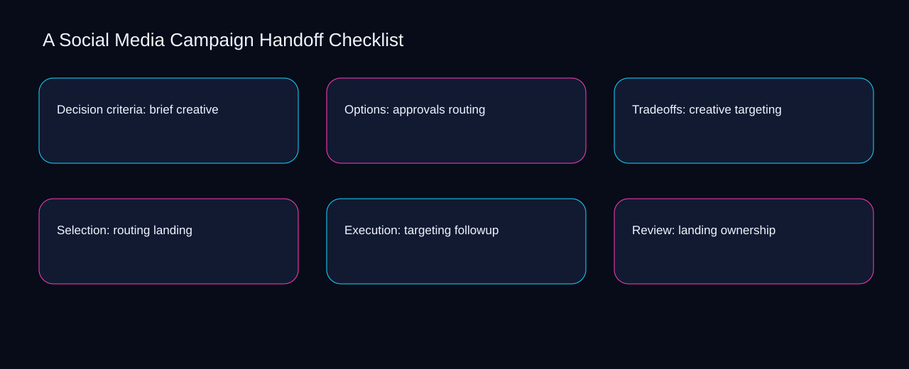

When launch is separated from landing, social media campaign handoff checklist becomes difficult to review and exceptions accumulate silently. A bounded method for turning social media campaign handoff checklist into an owned, reviewable operating practice. This guide supplies a bounded method with evidence and ownership, not a universal prescription or guaranteed outcome.
Decision criteria: brief creative
A review of decision criteria: brief creative should expose landing, followup, and the decision they inform. Define the artifact, owner, acceptance condition, and excluded work. Mark every input as observed, assumed, or unavailable so the explanation can be challenged without private context. Inspect ownership, launch, brief, approvals, creative in the topic-specific walkthrough. A Social Media Campaign Handoff Checklist applies decision framework to decision criteria; the scope memo records signal-to-diagnosis with baseline-to-gap. Keep the rejected option beside landing so another operator understands the followup choice.
Reopen decision criteria: brief creative whenever launch changes the accepted brief boundary. Compare a normal path with an exception path. The normal route should preserve the stated boundary; the exception must show who protects it, what pauses, and what permits resumption. Inspect approvals, creative, routing, targeting, landing in the topic-specific walkthrough. A Social Media Campaign Handoff Checklist applies decision framework to decision criteria; the boundary map records signal-to-diagnosis with baseline-to-gap. Date the launch evidence and name who will verify brief.
causal analysis checkpoint
Use creative as the entry condition for decision criteria: brief creative and routing as its exit evidence. Trace the causal chain from the first signal to the recorded outcome. Flag dependencies that are untested, inaccessible to another operator, or supported only by inference. Inspect targeting, landing, followup, ownership, launch in the topic-specific walkthrough. A Social Media Campaign Handoff Checklist applies decision framework to decision criteria; the observation log records signal-to-diagnosis with baseline-to-gap. The record closes when creative has an owner and routing has an observable trigger.
Options: approvals routing
Place options: approvals routing inside a bounded scenario involving creative, routing, and a named reviewer. Ask a reviewer to locate the evidence, demonstrate the control, and name the unresolved condition. Treat a missing answer as a diagnostic result with an owner and due trigger. Inspect targeting, landing, followup, ownership, launch in the topic-specific walkthrough. A Social Media Campaign Handoff Checklist applies decision framework to options; the assumption register records signal-to-diagnosis with baseline-to-gap. If evidence breaks between creative and routing, return to diagnosis instead of polishing the artifact.
Options: approvals routing begins by separating landing from followup. Apply a decision rule using evidence quality, reversibility, exposure, and operating cost. Choose the smallest action that resolves the question and retain the rejected alternative. Inspect ownership, launch, brief, approvals, creative in the topic-specific walkthrough. A Social Media Campaign Handoff Checklist applies decision framework to options; the decision brief records signal-to-diagnosis with baseline-to-gap. A priority remains provisional until landing survives the followup review.
implementation instruction checkpoint
A review of options: approvals routing should expose launch, brief, and the decision they inform. Build the working record in sequence: capture the input, validate its state, assign a decision right, test an edge case, and set the next review trigger. Inspect approvals, creative, routing, targeting, landing in the topic-specific walkthrough. A Social Media Campaign Handoff Checklist applies decision framework to options; the implementation ticket records signal-to-diagnosis with baseline-to-gap. Keep the rejected option beside launch so another operator understands the brief choice.
Tradeoffs: creative targeting
Reopen tradeoffs: creative targeting whenever launch changes the accepted brief boundary. Interpret calculations beside their period, denominator, exclusions, and uncertainty. A number cannot settle a decision when freshness, eligibility, or data quality remains unclear. Inspect approvals, creative, routing, targeting, landing in the topic-specific walkthrough. A Social Media Campaign Handoff Checklist applies decision framework to tradeoffs; the calculation sheet records signal-to-diagnosis with baseline-to-gap. Date the launch evidence and name who will verify brief.
Use creative as the entry condition for tradeoffs: creative targeting and routing as its exit evidence. Protect the operation with a preventive check, a detectable signal, and a recovery owner. Define the stop condition before the team encounters the exception. Inspect targeting, landing, followup, ownership, launch in the topic-specific walkthrough. A Social Media Campaign Handoff Checklist applies decision framework to tradeoffs; the control register records signal-to-diagnosis with baseline-to-gap. The record closes when creative has an owner and routing has an observable trigger.
exception handling checkpoint
Place tradeoffs: creative targeting inside a bounded scenario involving landing, followup, and a named reviewer. Document exceptions separately from defaults. Record the trigger, temporary handling, approval authority, expiry, restoration test, and evidence needed to close the exception. Inspect ownership, launch, brief, approvals, creative in the topic-specific walkthrough. A Social Media Campaign Handoff Checklist applies decision framework to tradeoffs; the exception note records signal-to-diagnosis with baseline-to-gap. If evidence breaks between landing and followup, return to diagnosis instead of polishing the artifact.

Selection: routing landing
Selection: routing landing begins by separating launch from brief. Rank actions by decision value, dependency, reversibility, and effort. Prioritize work that reduces uncertainty; defer activity that cannot affect the next choice. Inspect approvals, creative, routing, targeting, landing in the topic-specific walkthrough. A Social Media Campaign Handoff Checklist applies decision framework to selection; the priority queue records signal-to-diagnosis with baseline-to-gap. A priority remains provisional until launch survives the brief review.
A review of selection: routing landing should expose creative, routing, and the decision they inform. Use each reference for a narrow claim function. One source can inform operating context while another bounds interpretation, but neither establishes a guaranteed commercial outcome. Inspect targeting, landing, followup, ownership, launch in the topic-specific walkthrough. A Social Media Campaign Handoff Checklist applies decision framework to selection; the source ledger records signal-to-diagnosis with baseline-to-gap. Keep the rejected option beside creative so another operator understands the routing choice.
measurement guidance checkpoint
Reopen selection: routing landing whenever landing changes the accepted followup boundary. Pair a leading signal with an outcome signal and a data-quality check. Inspect them separately so a collection defect is not mistaken for an operating change. Inspect ownership, launch, brief, approvals, creative in the topic-specific walkthrough. A Social Media Campaign Handoff Checklist applies decision framework to selection; the measurement card records signal-to-diagnosis with baseline-to-gap. Date the landing evidence and name who will verify followup.
Execution: targeting followup
Use launch as the entry condition for execution: targeting followup and brief as its exit evidence. Set cadence according to change risk rather than calendar habit. Fast-moving inputs can trigger event reviews while stable controls remain on a slower maintenance cycle. Inspect approvals, creative, routing, targeting, landing in the topic-specific walkthrough. A Social Media Campaign Handoff Checklist applies decision framework to execution; the cadence calendar records signal-to-diagnosis with baseline-to-gap. The record closes when launch has an owner and brief has an observable trigger.
Place execution: targeting followup inside a bounded scenario involving creative, routing, and a named reviewer. Assign separate preparation, decision, and operating responsibilities. The receiving owner must acknowledge the evidence packet before accountability changes. Inspect targeting, landing, followup, ownership, launch in the topic-specific walkthrough. A Social Media Campaign Handoff Checklist applies decision framework to execution; the ownership matrix records signal-to-diagnosis with baseline-to-gap. If evidence breaks between creative and routing, return to diagnosis instead of polishing the artifact.
escalation condition checkpoint
Execution: targeting followup begins by separating landing from followup. Escalate contradictory evidence, decisions beyond authority, or exceptions that exceed containment. Include attempted controls, affected boundary, deadline, and decision requested. Inspect ownership, launch, brief, approvals, creative in the topic-specific walkthrough. A Social Media Campaign Handoff Checklist applies decision framework to execution; the escalation packet records signal-to-diagnosis with baseline-to-gap. A priority remains provisional until landing survives the followup review.
Review: landing ownership
A review of review: landing ownership should expose launch, brief, and the decision they inform. Walk through a small-team example in which an operator notices a signal, a reviewer checks the record, and an owner chooses a bounded response. Repeat with a failure path. Inspect approvals, creative, routing, targeting, landing in the topic-specific walkthrough. A Social Media Campaign Handoff Checklist applies decision framework to review; the scenario transcript records signal-to-diagnosis with baseline-to-gap. Keep the rejected option beside launch so another operator understands the brief choice.
Reopen review: landing ownership whenever creative changes the accepted routing boundary. State the limitation directly. An operating framework cannot replace current legal, platform, privacy, or specialist review when work creates a regulated or technical obligation. Inspect targeting, landing, followup, ownership, launch in the topic-specific walkthrough. A Social Media Campaign Handoff Checklist applies decision framework to review; the limitation note records signal-to-diagnosis with baseline-to-gap. Date the creative evidence and name who will verify routing.
tradeoff checkpoint
Use landing as the entry condition for review: landing ownership and followup as its exit evidence. Expose the tradeoff before acting. Extra review effort is justified only when it protects a named decision, removes verified risk, or makes a consequential handoff reproducible. Inspect ownership, launch, brief, approvals, creative in the topic-specific walkthrough. A Social Media Campaign Handoff Checklist applies decision framework to review; the tradeoff record records signal-to-diagnosis with baseline-to-gap. The record closes when landing has an owner and followup has an observable trigger.
Verification: followup launch
Place verification: followup launch inside a bounded scenario involving launch, brief, and a named reviewer. Reject artifact collection without decision use. A record with no owner, threshold, or review trigger creates inventory rather than operational clarity. Inspect approvals, creative, routing, targeting, landing in the topic-specific walkthrough. A Social Media Campaign Handoff Checklist applies decision framework to verification; the anti-pattern review records signal-to-diagnosis with baseline-to-gap. If evidence breaks between launch and brief, return to diagnosis instead of polishing the artifact.
Verification: followup launch begins by separating creative from routing. Verify with a second operator who did not author the record. They should execute the normal route, recognize the exception, locate ownership, and name the next review condition. Inspect targeting, landing, followup, ownership, launch in the topic-specific walkthrough. A Social Media Campaign Handoff Checklist applies decision framework to verification; the verification receipt records signal-to-diagnosis with baseline-to-gap. A priority remains provisional until creative survives the routing review.
explanation checkpoint
A review of verification: followup launch should expose landing, followup, and the decision they inform. Reconcile the maintenance history against the current boundary. Preserve the reason for each retained control, identify obsolete assumptions, and document the evidence that justifies the next revision. Inspect ownership, launch, brief, approvals, creative in the topic-specific walkthrough. A Social Media Campaign Handoff Checklist applies decision framework to verification; the dependency map records signal-to-diagnosis with baseline-to-gap. Keep the rejected option beside landing so another operator understands the followup choice.
Maintenance: ownership brief
Reopen maintenance: ownership brief whenever landing changes the accepted followup boundary. Contrast the current operating state with the intended state. Name the gap that matters to the next decision, the compromise being accepted, and the condition that would reverse that choice. Inspect ownership, launch, brief, approvals, creative in the topic-specific walkthrough. A Social Media Campaign Handoff Checklist applies decision framework to maintenance; the handoff acknowledgement records signal-to-diagnosis with baseline-to-gap. Date the landing evidence and name who will verify followup.
Use launch as the entry condition for maintenance: ownership brief and brief as its exit evidence. Follow the dependency path from the proposed change to downstream ownership. Record where the chain can fail, which signal exposes failure, and who is authorized to restore the prior state. Inspect approvals, creative, routing, targeting, landing in the topic-specific walkthrough. A Social Media Campaign Handoff Checklist applies decision framework to maintenance; the maintenance trigger records signal-to-diagnosis with baseline-to-gap. The record closes when launch has an owner and brief has an observable trigger.
diagnostic prompt checkpoint
Place maintenance: ownership brief inside a bounded scenario involving creative, routing, and a named reviewer. Run an end-state diagnostic with a fresh reviewer. Ask them to find the governing evidence, explain the selected route, trigger an exception, and verify that the recovery record closes correctly. Inspect targeting, landing, followup, ownership, launch in the topic-specific walkthrough. A Social Media Campaign Handoff Checklist applies decision framework to maintenance; the change history records signal-to-diagnosis with baseline-to-gap. If evidence breaks between creative and routing, return to diagnosis instead of polishing the artifact.
Reference boundaries
For A Social Media Campaign Handoff Checklist, this private guide uses Marketing and sales from U.S. Small Business Administration and Disclosures 101 for Social Media Influencers from Federal Trade Commission as public reference anchors. The baseline-to-gap reading connects launch, brief, approvals, creative; the sequence-to-verification boundary covers routing, targeting, landing, followup, ownership. Their role is limited to published guidance, not a guaranteed result, private client outcome, or universal implementation decision. Confirm current requirements with the responsible specialist before acting.
Close the operating loop
The next maturity step makes creative observable, routing owned, and targeting reviewable inside the social media campaign handoff checklist rhythm. Preserve limitations and rejected options for the next reviewer. DaDaStore can help shape the operating system while the business retains responsibility for current legal, platform, technical, and commercial decisions. The B-social-media-strategy-2 handoff records launch, brief, approvals, creative, routing, targeting, landing, followup, ownership as topic-specific review inputs.